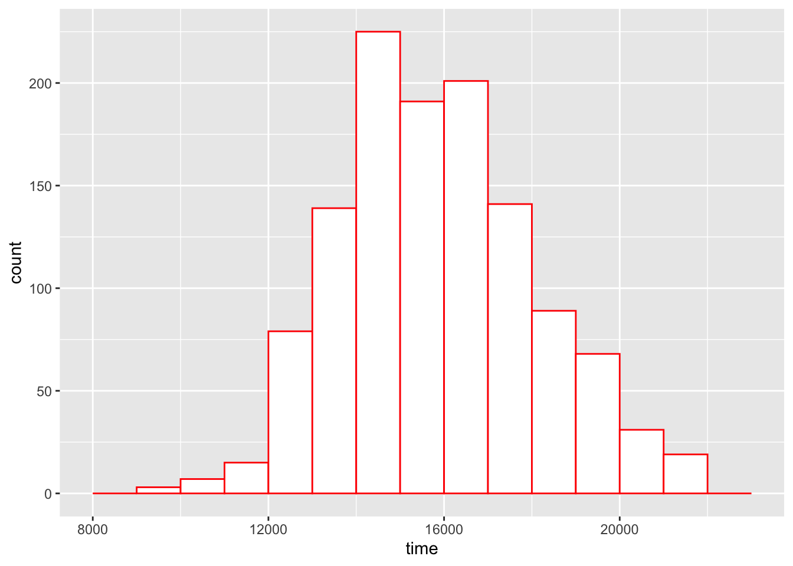
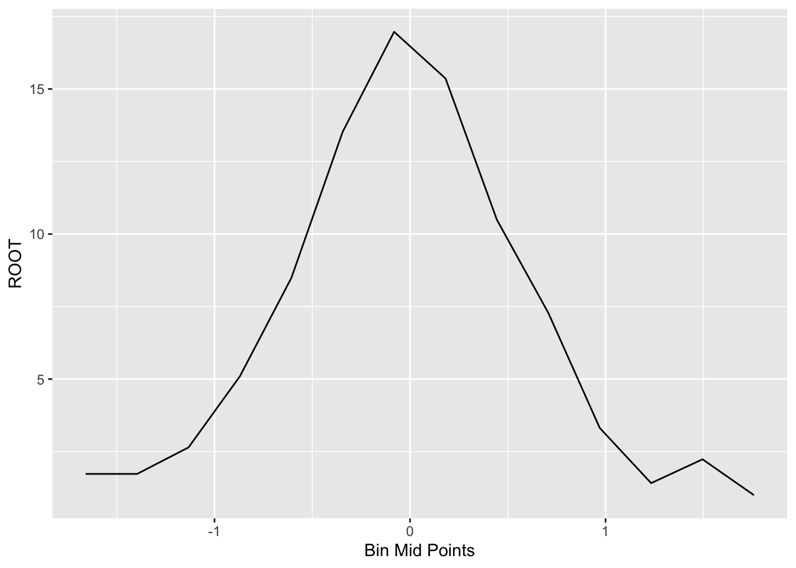
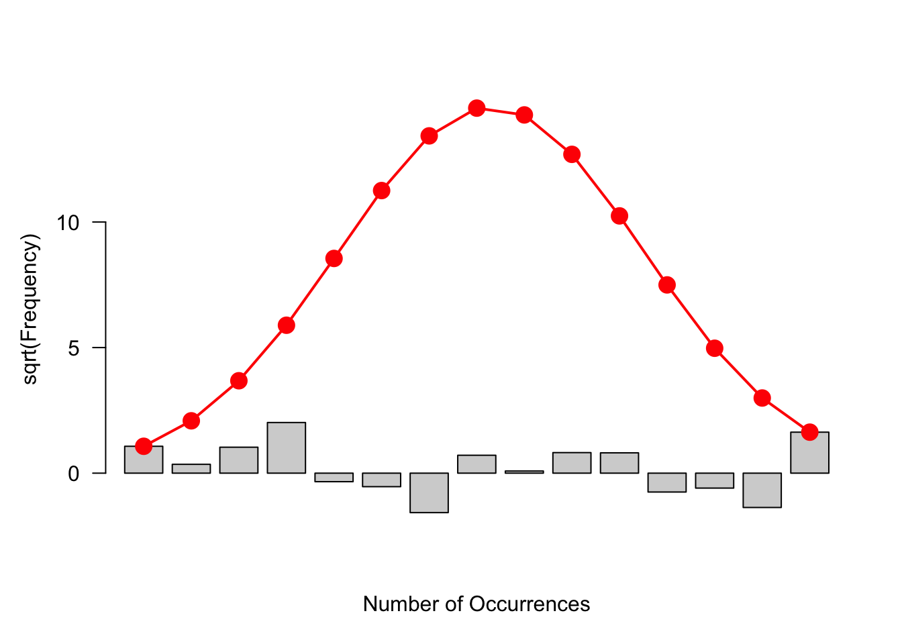
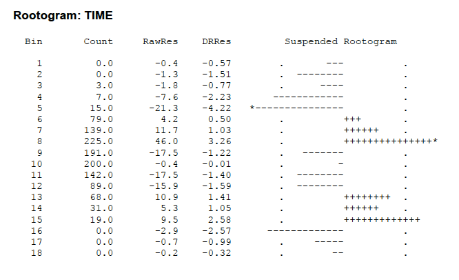

21 Binned Data
21.1 Meet the data
Our data are the times (in seconds) in running Grandma’s Marathon (run in Duluth, Minnesota) for women of ages 19 to 34. (http://www.grandmamarathon.org) This data is stored as the dataset grandma.19.40 in the LearnEDAfunctions package.
library(LearnEDAfunctions)
library(tidyverse)Here are the top ten times:
grandma.19.40 %>%
arrange(time) %>%
slice(1:10)## time
## 1 9233
## 2 9400
## 3 9473
## 4 10051
## 5 10325
## 6 10565
## 7 10723
## 8 10779
## 9 10840
## 10 10988There are 1208 women that ran this particular race. Some questions come to mind:
- How do we display this batch of data effectively?
- How do we compare this display with a standardized shape, such as the normal.
- What are ``good” residuals to compute that compare the batch with the standardized shape?
21.2 Constructing a histogram
When we have a lot of data, we first group the data into bins and then construct a histogram of the group counts.
Scanning the data, we see that the times (in seconds) range between 9233 and 21595. Let’s cut the range into bins of width 1000 as follows:
bins <- seq(8000, 23000, 1000)
bin.mids <- (bins[-1] + bins[-length(bins)]) / 2I used R to construct a histogram of the race times using this choice of bins.
ggplot(grandma.19.40, aes(time)) +
geom_histogram(breaks = bins,
fill = "white",
color = "red")
Whenever we construct a bar graph or histogram, it is important to adhere to the area principle.
AREA PRINCIPLE: Each data value should be represented by the same amount of area in the graphical display.
This is an important principle since the visual impact of a bar is proportional to an area. (You can probably think of misleading graphs that you have seen in newspapers or magazines where the area principle is not followed and the resulting graphical display is not an accurate representation of the data.) The histogram with equally spaced bins (like the ones we chose) does obey the area principle.
What we see in this histogram of the marathon race times?
The first thing that we should notice is the approximate bell-shape of the times. Most of the runners have time in the 13000-20000 seconds range and it pretty uncommon to have a time close to 10000 or larger than 20000 seconds. Since the most popular bell-shape is the normal or Gaussian curve, we might wonder how well these data fit a normal curve.
There is one problem interpreting the shape of histograms. The heights of the bars correspond to the counts in the bins. There is a basic fact about counts:
Large counts show more variability than small counts.
Another way of saying this is that there is more variation in the bar heights in bins with long bars than in bins with short bars. We see this in our histogram. As shown in the figure below, there appears to be more spread in the heights of the tallest bars than in the heights of the shortest bars. This will make it harder to compare our histogram with a normal curve.
21.3 A rootogram
What we see in the heights of the histogram bars illustrates a general pattern of counts. Large counts tend to have more variability than small counts. This histogram illustrates a dependence between spread and level that we talked about when we were comparing batches. We can remove the dependence between spread and level by using a reexpression. From experience, the most helpful reexpression is a square root – so it is better to work with the square root of the frequencies than the frequencies. In the table below, we show the bins, the frequencies (we use the symbol \(d\) to denote a frequency) and the root frequencies.
p <- ggplot(grandma.19.40, aes(time)) +
geom_histogram(breaks = bins)
out <- ggplot_build(p)$data[[1]]
select(out, count, x, xmin, xmax)## count x xmin xmax
## 1 0 8500 8000 9000
## 2 3 9500 9000 10000
## 3 7 10500 10000 11000
## 4 15 11500 11000 12000
## 5 79 12500 12000 13000
## 6 139 13500 13000 14000
## 7 225 14500 14000 15000
## 8 191 15500 15000 16000
## 9 201 16500 16000 17000
## 10 141 17500 17000 18000
## 11 89 18500 18000 19000
## 12 68 19500 19000 20000
## 13 31 20500 20000 21000
## 14 19 21500 21000 22000
## 15 0 22500 22000 23000A rootogram is simply a bar graph where the heights of the bars are the root frequencies. Here is a rootogram for our data:
ggplot(out, aes(x, sqrt(count))) +
geom_col()
How is this an improvement over the histogram? By taking a root reexpression, the variability of the heights of the bars is approximately the same for small and large counts. By making the variability constant, it will be easier to make comparisons between the observed counts and fitted counts from a Gaussian curve.
But there is a downside to a rootogram. By taking the root, the areas in the bars are no longer proportional to the number of data values. So we are violating the area principle. But we think that the issue of ease of comparison of the observed and fitted counts is more important here than the accuracy of the display.
21.4 Fitting a Gaussian comparison curve
Next, we’d like to fit a Gaussian (normal) curve to these data. You may have done this type of before – specifically, in the context of learning about the chi-square goodness of fit test procedure.
We want first to find a Gaussian curve that matches the data. We could find the Gaussian curve that has the same mean and standard deviation as the observed data. But the mean and standard deviation of the data are nonresistant measures that can be distorted by extreme values in the sample. So we use resistant measures (median, fourths, etc.) to find the matching Gaussian parameters.
We find the Gaussian mean by taking the average of the lower and upper fourths: \[ m = \frac{F_U + F_L}{2}. \]
We use the fourth-spread of the sample to estimate the Gaussian standard deviation. Remember that the middle 50% of a normal curve has width 1.349 \(s\), where \(s\) is the standard deviation. Using this fact, the Gaussian standard deviation \(s\) is given by \[ s = \frac{F_U - F_L}{1.349}. \]
Let’s illustrate finding the matching Gaussian parameters for our marathon times data.
Here the fourths are 14296 and 17321. So the matching mean is \[ m = \frac{14296 + 17321} {2} = 15808 \] and the matching standard deviation is \[ s = \frac{17321 - 14296} {1.349} = 2242 \] So our matching Gaussian curve is N(15808, 2242).
From our Gaussian curve, we can find expected counts for each bin.
First, we find the probability that a running time falls in each bin using the normal curve. To illustrate, the probability that a time falls in the interval (9000, 10000) is \[ PROB = \Phi\left(\frac{10000-m}{s}\right) - \Phi\left(\frac{9000-m}{s}\right), \] where \(m\) and \(s\) are the normal mean and standard deviation found above and \(\Phi(z)\) is the area under the standard normal curve to for values smaller than \(z\).
We then find the expected number in a bin (we call this expected count \(e\)) by multiplying the total sample size (here 1208) by the probability.
The table below gives the observed count (\(d\)) and expected count (\(e\)) for all the intervals.
s <- fit.gaussian(grandma.19.40$time, bins, 15808, 2242)
options(digits=3)
(df <- data.frame(Mid=bin.mids, d=s$counts, sqrt.d=sqrt(s$counts),
Prob=s$probs, e=s$expected, sqrt.e=sqrt(s$expected),
Residual=s$residual))## Mid d sqrt.d Prob e sqrt.e Residual
## 1 8500 0 0.00 0.000948 1.15 1.07 -1.0702
## 2 9500 3 1.73 0.003595 4.34 2.08 -0.3518
## 3 10500 7 2.65 0.011205 13.54 3.68 -1.0333
## 4 11500 15 3.87 0.028712 34.68 5.89 -2.0164
## 5 12500 79 8.89 0.060494 73.08 8.55 0.3397
## 6 13500 139 11.79 0.104797 126.59 11.25 0.5384
## 7 14500 225 15.00 0.149277 180.33 13.43 1.5714
## 8 15500 191 13.82 0.174846 211.21 14.53 -0.7129
## 9 16500 201 14.18 0.168399 203.43 14.26 -0.0853
## 10 17500 141 11.87 0.133366 161.11 12.69 -0.8184
## 11 18500 89 9.43 0.086849 104.91 10.24 -0.8088
## 12 19500 68 8.25 0.046504 56.18 7.50 0.7511
## 13 20500 31 5.57 0.020474 24.73 4.97 0.5946
## 14 21500 19 4.36 0.007411 8.95 2.99 1.3669
## 15 22500 0 0.00 0.002205 2.66 1.63 -1.6322This table also gives the root expected counts for all bins. The figure below is a rootogram with a smooth curve on top that corresponds to the root expected counts.
ggplot(out, aes(x, sqrt(count))) +
geom_col() +
geom_line(data = df,
aes(bin.mids, sqrt.e), color="red")
21.5 Residuals
We want to see how well this Gaussian curve fits our histogram. To do this, we want to look at residuals which compare the counts with the expected counts using the normal model. What is a good definition of residual in this case?
A simple rootogram residual is based on the difference between the root count and the root of the expected count: \[ r = \sqrt{d} - \sqrt{e}. \] These residuals are displayed in the above table. Residuals that are unusually large (either positive or negative) correspond to bins that have counts that deviate from what would be expected from a Gaussian distribution.
21.6 Hanging rootogram
There is a clever alternative way of displaying the rootogram that gives attention to the residuals.
First, we graph \(\sqrt{e}\), the square root of the fitted counts. This is shown as the red bell-shape curve on the figure below.
Next, we graph \(\sqrt{e}-\sqrt{d}\) by subtracting the rootogram bars (of height \(\sqrt{d}\) ) to the bell-shape curve. This is called a hanging rootogram, since we are in effect hanging the rootogram on the Gaussian fit.
library(vcd)
rootogram(s$counts, s$expected)
The focus of this graph is different from that of the rootogram. In the rootogram we were looking at the heights of the bars. In a hanging rootogram, we notice how the bars fall above or below the horizontal line at 0. Bars that fall below (above) the line correspond to positive (negative) residuals.
You might be more comfortable with a residual plot like below where hanging bars have been removed and bars are plotted with heights .
rootogram(s$counts, s$expected, type="deviation")
21.7 Interpreting the residuals
We see some lack of fit of the Gaussian curve:
- the number of small times seems a bit low
- we see too many times around 14000 seconds and larger than 18000 seconds
How can we interpret this lack of fit? In a race such as a marathon, it makes sense that there are relatively few (even fewer than predicted by a normal curve) runners that are very fast. Also, there are a relatively large number of slow runners – these are the runners who are most interested in finishing the race and the time they run isn’t that important. This is interesting. By looking beyond the general bell-shape of the data, we get some extra insight about the times of a marathon race.
21.8 Other definitions of residuals (Double Root Residuals)
Although we focused on the use of R, the package MINITAB also constructs a suspended rootogram. But the output looks a bit different and needs some extra explanation.
I entered the raw data (from “grandma.txt”) into MINITAB. I created a new column called “bins” that contained the cutpoints for the bins that I want to use – these are the numbers 9000, 10000, 11000, etc. I then executed the rootogram command – you indicate the column that contains the race times and the column that has the bin cutpoints.
Here is the output.

The Bin and Count columns are self-explanatory. The column RawRes contains the raw residuals that are simply $d – $e (no roots). The DRRs contains the so-called “double-root residuals”. This is a slight variation of the root residuals that we used above. It is defined by \[ DRR = \sqrt{2 + 4d} - \sqrt{1+ 4e} \] Actually a DRR is approximately equal to twice the residual we defined. (Can you guess why this is called a double-root residual?) \[ DRR = 2( \sqrt{d} - \sqrt{e}) \] The extra 2 and 1 inside the radical helps out when one has small bin counts – the DRR makes sense even when there are no observations in the bin.